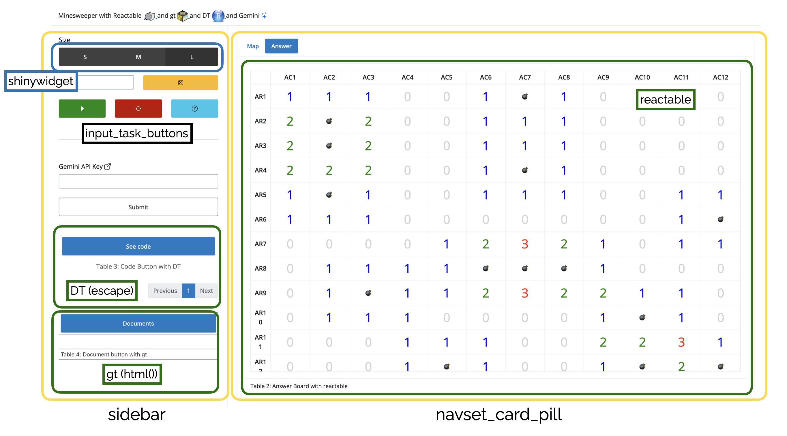

library(reactable)
library(DT)
library(gt)
library(shiny)
library(shinyWidgets)
library(bslib)
library(bsicons)
library(shinyjs)
library(cicerone)
library(magrittr)
library(gemini.R)mine.tables
A. Purpose of this submission
- Enjoyable table
I was thinking about what table to create for the table contest 2024, I wanted to create a use case for a table that could be enjoyed without context or understanding of the data, I wanted to create a use case for the table that could be enjoyed without the context and understanding of the data. So, although I am not a professional game developer, I created a “Minesweeper” game using tables.
- Various table
I wanted to showcase the capabilities of different tables.
There are a lot of packages available for working with tables in R, each with their own strengths and weaknesses. I haven’t used all of them, but I didn’t want to limit myself to just one package.
I used reactable, which is my favourite, DT, which was the first one I started using, and finally gt, which has recently been getting a lot of love in the clinical domain.
Of course, there are other valuable packages like flextable and data.table, but I don’t have time to cover them all.
- Interactive table
Since I’m using shiny, I wanted to create some interaction with the user or external services in the table, so I threw in a little bit of LLM functionality, which is all the rage these days.
B. How to play mine-sweeper
This can be followed as Guide with Cicerone in Shiny application
C. How to use Gemini
- get API key from Google AI Studio (FREE!)
- this feature uses R package {gemini.R} see link

D. Code explanation
Part 1. Libaries
I used 11 R packages in this mine.tables
First 3 is for table work, and next 6 is for shiny application, and last 2 is for API call gemini.
Part 2. Shiny UI
Since you may see Every code, I attached image of key functions

Part 3. Shiny Server
Server logic is consisted with 5 major parts.
- mine sweeper game
- Randomly generate data with given size and mine (START)
- Get click input from user
- Check if it is mine or not and show results
- reactable
- To get clicked cell from user with reactable, I used
onClickparameter of reactable to create “Shiny.setInputValue” (Javascript Event - render mine count, and mine emoji with
color_textfunction which return HTML element with color.
- DT
- To implement Button-like table with DT. used
escapeparameter to use HTML tag. - In cell element (Button) it uses
onclickto open github repository. - The
paginationdoesn’t affect functionality, but I left it on purpose because without it, it’s hard to tell it’s a table.
- gt
- Also, to implement Button-like table with gt, I used HTML in
tab_headerto button. (Which hasonclickfor this document) - However, gt seems must show
bodyso I usedcolumnto button and body to just show empty.
- gemini and cicerone
- See their own repo please.
D. Summary
I made little game-like shiny application with various table R package, and I hope you enjoy it.